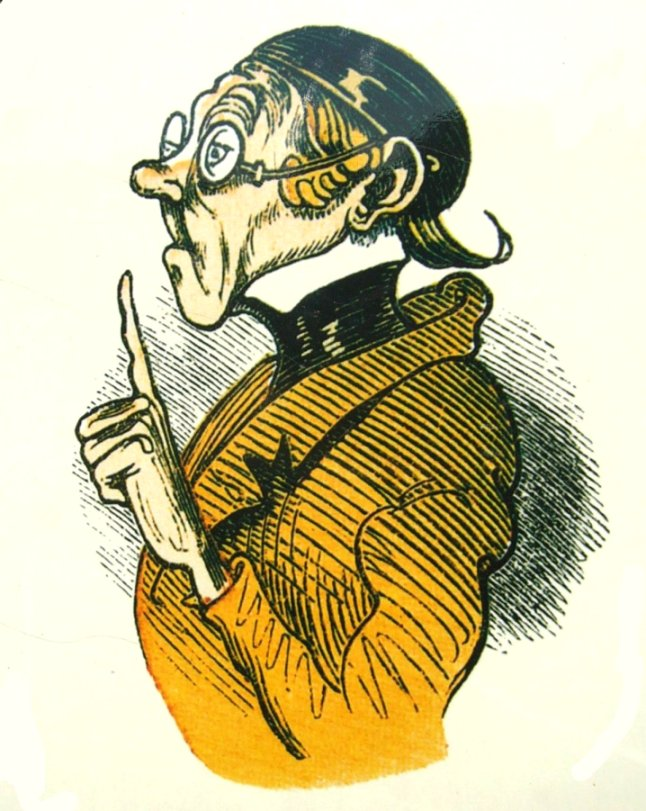
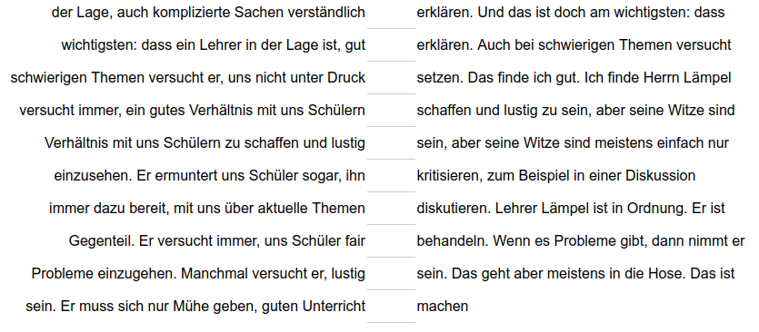
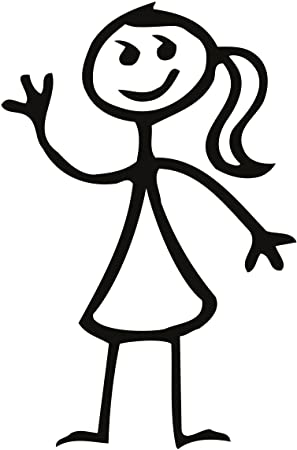
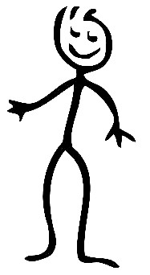

Ein idealer Lehrer, die beste Studentin?
Niveau A2 Sprachhandlung Fähigkeiten beschreiben Thema Idealer Lehrer, beste Studentin Grammatik zu-Infinitiv
Übungsaufgabe 1 Denken Sie an Ihre Lieblingslehrkraft aus der Schulzeit oder an der Universität. Wieso ist sie ihre Lieblingslehrkraft? Sprechen Sie mit Ihrer Partnerin und sammeln Sie dann Stichworte an der Tafel (00-10).
Sie ist freundlich / streng / lustig / fleißig / …
Er versucht immer, die Schüler zu …
Sie gibt sich Mühe, … zu …
Übungsaufgabe 2 Das ist Lehrer Lämpel, ein Lehrer aus einem bekannten deutschen Kinderbuch. Schauen Sie sein Bild an. Vermuten Sie: Was für ein Lehrer ist Lehrer Lämpel? Hören Sie dann, was Lehrer Lämpels Schüler über ihn zu sagen haben und vergleichen Sie (10-30).
Transkript
Ich mag unseren Lehrer, Herrn Lämpel. Er ist streng und ein bisschen altmodisch. Aber er ist in der Lage, auch komplizierte Sachen verständlich zu erklären. Und das ist doch am wichtigsten: dass ein Lehrer in der Lage ist, gut zu erklären. Auch bei schwierigen Themen versucht er, uns nicht unter Druck zu setzen. Das finde ich gut.
Ich finde Herrn Lämpel ganz okay. Er versucht immer, ein gutes Verhältnis mit uns Schülern zu schaffen und lustig zu sein, aber seine Witze sind meistens einfach nur schlecht. Was ich an ihm gut finde: Er hat kein Problem damit, Fehler einzusehen. Er ermuntert uns Schüler sogar, ihn zu kritisieren, zum Beispiel in einer Diskussion oder so. Er ist immer dazu bereit, mit uns über aktuelle Themen zu diskutieren.
Lehrer Lämpel ist in Ordnung. Er ist streng und fähig, sich durchzusetzen. Aber das heißt nicht, dass er unfair ist. Im Gegenteil. Er versucht immer, uns Schüler fair zu behandeln. Wenn es Probleme gibt, dann nimmt er sich Zeit, auf unsere Probleme einzugehen. Manchmal versucht er, lustig zu sein. Das geht aber meistens in die Hose. Das ist okay. Ich meine, ein guter Lehrer muss nicht unbedingt lustig sein. Er muss sich nur Mühe geben, guten Unterricht zu machen.
Übungsaufgabe 3 Hören Sie die Beschreibungen von Lehrer Lämpels Schülern noch einmal und ergänzen Sie die Lücken (30-40).

Übungsaufgabe 4 Denken Sie jetzt noch einmal an Ihre Lieblingslehrkraft aus der Schulzeit oder an der Universität. Wieso war sie Ihre Lieblingslehrkraft? Schreiben Sie einen kleinen Text über Ihre Lieblingslehrkraft (40-50).
Pause (50-55)
Übungsaufgabe 5 Was zeichnet eine ideale Studentin oder einen idealen Studenten aus? Was muss sie oder er können? Wie muss er oder sie sein? Bilden Sie kleine Gruppen und beraten sie. Zeichnen Sie zusammen ein Bild und machen Sie Notizen (55-70).


Übungsaufgabe 6 Stellen Sie das Ergebnis Ihrer Gruppenarbeit im Plenum vor. Zeigen Sie Ihr Bild und beschreiben Sie anhand Ihres Bildes die ideale Studentin bzw. den idealen Studenten. Die anderen hören zu und stellen dann eine Frage (70-90).
Eine gute Studentin ist …
Sie bemüht sich, … zu …
Sie versucht immer, … zu …
Ein guter Student ist in der Lage, … zu …
Er ist fähig, … zu …
Er ist immer bereit, … zu …